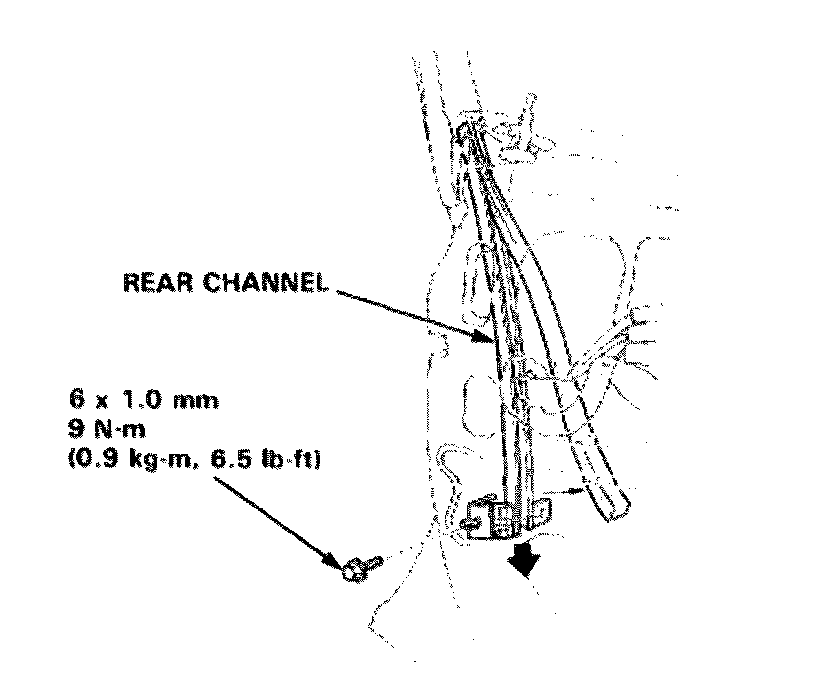
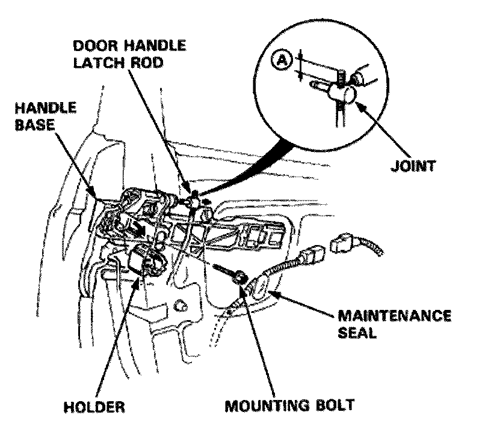
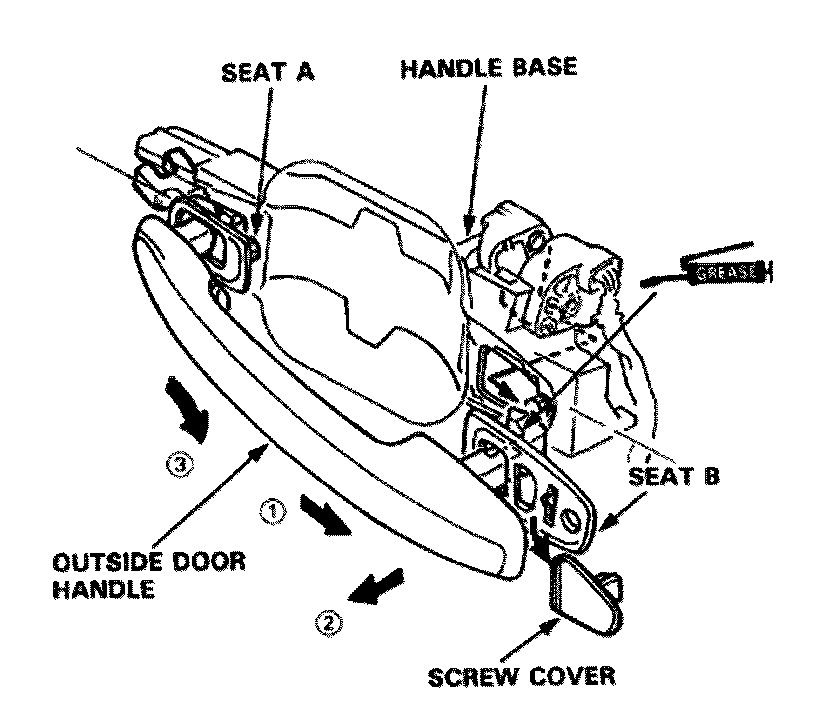
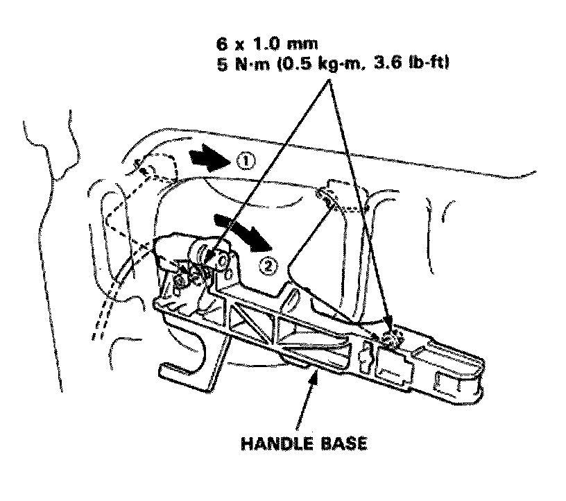
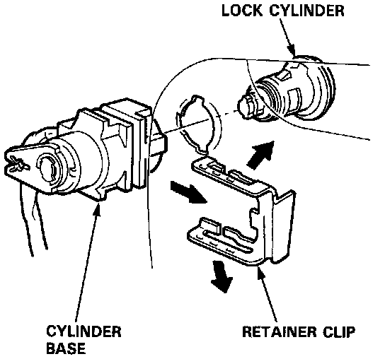

Front Door Exterior Handle: Service and Repair
Front Door Outside Door Handle Replacement
NOTE: Raise the window fully.
1. Remove
Door panel
Plastic cover
Rear channel

2. Disconnect the connector and harness clip.
3. Remove the maintenance seal and mounting bolt, then remove the holder from the handle base. Pry the door handle latch rod out of its joint using a flat tip screwdriver.
NOTE: To ease reassembly, note the location A of the rod on the joint before disconnecting it.

4. Remove the screw cover while pulling the handle.
5. Remove the outside door handle by sliding it backward and pulling out from the handle base.

6. Loosen the mounting bolts and remove the handle bas by sliding it forward.

7. Pull out the retainer clip, remove the lock cylinder and cylinder base.

8. Installation is the reverse order of removal.
NOTE: Make sure handle wires are not pinched.